版本：v1.0
日期：2026-07-05
适用范围：Web、桌面端、移动端、插件化业务应用、内部工具、AI Agent 应用
核心范式：Controlled Declarative Generative UI + Agentic Intent Runtime
中文名：受控声明式生成 UI + 意图智能体运行时
本文给出一种通用的软件架构范式：用户通过自然语言、语音、默认 UI、自动化事件表达目标，系统通过意图运行时、契约注册层、安全策略、受控执行、生成式 UI 运行时和审计反馈，把目标转化为可执行、可验证、可恢复的界面与动作。
这套架构不是“让大模型自由写 UI 代码”，也不是“让 Agent 直接操作 DOM 或数据库”。成熟路线是：
用户意图
-> 结构化意图计划 IntentPlan
-> 契约注册层校验
-> 策略引擎裁决
-> 受控执行与状态更新
-> UI DSL 生成
-> DSL / UX 双重校验
-> 动态画布渲染
-> 动作事件再次进入策略闭环大模型在本架构中是概率性推理与生成组件，不是主权层。主权层属于 schema、registry、policy、state kernel、journal 和 runtime validator。
本文综合以下资料形成模块划分与工程边界。
AI SDK 提供结构化对象生成、工具调用和流式 UI 相关能力，说明生成式 UI 的工程化方向并非让模型直接写任意前端代码，而是让模型输出受控对象、工具调用或组件映射，再由应用运行时渲染。本文中的 LLM Gateway、Structured Output、Streaming Patch、Tool / Action Invocation 设计受此启发。
Google Cloud 对 Generative UI 的定义强调：AI agent 根据用户目标实时编排组件、数据和布局。生产级系统应使用固定组件库和受控协议，而不是让模型生成任意视觉代码。本文中的 Component Cards、UI DSL、Dynamic Canvas、DataSource Registry 和 Policy-aware Orchestration 采用这一原则。
CopilotKit 生态强调 agent 与应用前端之间需要协议、状态共享和事件桥接，而不是只靠 prompt。本文中的 Agent-UI Protocol、Runtime Event Bus、Application State Bridge、Tool Invocation Boundary 采用这一思路。
OpenAI 官方文档强调结构化输出与函数调用可使模型输出符合开发者提供的 schema。本文将所有模型输出约束为 IntentPlan、UIDslDocument、ClarificationRequest、AuditNarrative 等结构化对象，并要求失败时 retry、降级或拒绝。
该论文提出 UXBench，用 2,000 个真实 UI 截图 VQA 样本评估多模态大模型的 UI-UX reasoning 能力。论文强调 UI 看起来正确并不等于 UX 合格，很多问题来自遮挡、弹窗、内容不一致、可点击区域不可达、信任破坏等。本文中的 UX Validator、Multimodal UX Evaluator、UX Risk Decision、Fallback UI 直接吸收了这一结论。
docs/research/brainstorm/reference/reference.mddocs/research/brainstorm/reference/reading-notes.mddocs/research/brainstorm/reference/guide.mddocs/research/brainstorm/reference/reasoning-for-mobile-user-experience-with-multimodal-llms-2606.13192.pdfdocs/research/brainstorm/mature-intent-native-generative-ui-build-guide1.md下图是本文的模块级总览。橙色虚线边框代表需要或可以调用大模型 API 的模块；普通节点代表确定性工程模块。

图中最重要的阅读方式：
模型可以提出计划、生成 UI DSL、生成澄清问题、生成审计解释，但不能：
用户“有权控制的一切”必须以 CapabilityDefinition 注册。未注册能力不存在，模型不能凭空发明。
export type CapabilityDefinition = {
id: string;
domain: "ui" | "data" | "file" | "task" | "integration" | "settings" | "automation";
title: string;
description: string;
inputSchema: JsonSchema;
outputSchema: JsonSchema;
requiredPermissions: string[];
risk: RiskProfile;
reversible: boolean;
execute: CapabilityExecutor;
};UI 不是真实业务状态本身。真实状态在 State Kernel。动态 UI 只是基于状态、意图计划和用户上下文生成的一种视图投影。
安全策略、权限检查、确认流程、审计日志和回退机制必须由确定性系统实现。Prompt 只能帮助模型理解禁止事项，不能替代安全系统。
UX Validator 是运行时质量门，不是设计评审文档。它应检查遮挡、弹窗、可达性、误导、内容一致性、认知负担和默认恢复入口。
| 层 | 模块 | 本质职责 | 是否可调用大模型 |
|---|---|---|---|
| 输入标准化 | Intent Input Adapter | 统一自然语言、语音、默认 UI、自动化输入 | 否 |
| 输入标准化 | Context Builder | 构造规划上下文和策略上下文 | 否 |
| 契约注册 | Contract Registry Center | 管理能力、组件、数据源、设计令牌、事件协议 | 否 |
| 意图运行时 | LLM Gateway | 封装模型 provider、结构化输出、限流、重试 | 是 |
| 意图运行时 | Semantic Planner | 把目标变成 IntentPlan | 是 |
| 意图运行时 | IntentPlan | 结构化计划文档 | 否 |
| 意图运行时 | Plan Validator | 校验计划合法性和边界 | 否 |
| 策略闸门 | Policy Engine | 权限、风险、确认、拒绝、澄清裁决 | 否 |
| 策略闸门 | Human Confirmation UI | 人类确认高风险动作 | 否 |
| 策略闸门 | Clarification Generator | 生成澄清问题 | 可选 |
| 策略闸门 | Deny and Recovery | 拒绝原因与恢复建议 | 可选 |
| 执行状态 | Action Router | 将 UI 事件转成 ActionRef 并进入策略 | 否 |
| 执行状态 | Transactional Executor | 执行已授权能力 | 否 |
| 执行状态 | Data Proxy Engine | 受控读取、脱敏、分页、缓存、流式数据 | 否 |
| 执行状态 | State Kernel | 应用状态唯一事实源 | 否 |
| 执行状态 | Execution Journal | 不可抵赖执行记录 | 否 |
| 生成式 UI | UI DSL Generator | 生成声明式 UI DSL | 是 |
| 生成式 UI | Streaming Patch Parser | 流式解析和增量 patch | 否 |
| 生成式 UI | UI DSL Document | 声明式 UI 文档 | 否 |
| 生成式 UI | DSL Validator | 校验 UI DSL | 否 |
| 生成式 UI | Virtual UI Tree | 中间组件树 | 否 |
| 生成式 UI | Component Factory | 实例化注册组件 | 否 |
| 生成式 UI | Layout Solver | 响应式布局求解 | 否 |
| 生成式 UI | UX Validator | UX 风险检查 | 否 |
| 生成式 UI | Multimodal UX Evaluator | 截图级 UX reasoning | 可选 |
| 生成式 UI | Dynamic Canvas | 渲染最终界面 | 否 |
| 生成式 UI | Fallback UI | 默认恢复入口 | 否 |
| 反馈审计 | Audit Explanation Generator | 把日志解释给用户 | 可选 |
sequenceDiagram
autonumber
participant U as 用户
participant IA as 输入适配器
participant CTX as 上下文构建器
participant REG as 契约注册中心
participant PLAN as 语义规划器
participant LLM as 大模型 API 网关
participant VAL as 计划校验器
participant POL as 策略引擎
participant EXE as 事务执行器
participant ST as 状态内核
participant UI as UI DSL 生成器
participant UX as UX 校验器
participant CAN as 动态画布
U->>IA: 自然语言/语音/默认 UI 事件
IA->>CTX: IntentInput
CTX->>REG: 请求可见契约卡片
CTX->>PLAN: PlannerContext
PLAN->>LLM: 结构化计划请求
LLM-->>PLAN: IntentPlan 草案
PLAN->>VAL: IntentPlan
VAL->>REG: 校验 capability / dataSource / schema
VAL->>POL: Normalized IntentPlan
POL->>EXE: allow / confirm 后执行
EXE->>ST: 状态变更
ST->>UI: 状态快照
UI->>LLM: 结构化 UI DSL 请求
LLM-->>UI: UI DSL 草案
UI->>UX: DSL 渲染前后校验
UX->>CAN: 通过后渲染
CAN-->>U: 动态界面职责：
IntentInput。输入：
type RawInput =
| { kind: "text"; text: string }
| { kind: "voice"; transcript: string; confidence: number }
| { kind: "ui_event"; eventName: string; payload: unknown }
| { kind: "automation"; ruleId: string; payload: unknown };输出：
export type IntentInput = {
id: string;
actorId: string;
source: "natural_language" | "voice" | "default_ui" | "automation" | "api";
utterance?: string;
event?: { name: string; payload: unknown };
locale: string;
createdAt: string;
traceId: string;
};不变量：
IntentInput，不允许默认 UI 绕过策略系统。失败模式：
测试：
IntentInput。职责：
PlannerContext，给策略引擎看的 PolicyContext。关键区分：
PlannerContext
面向模型。
只包含摘要、可见能力、可见组件、可见数据源、当前任务状态。
PolicyContext
面向策略引擎。
包含真实权限、组织规则、资源状态、风险上下文。不变量：
失败模式：
测试：
职责：
组成：
Contract Registry Center
Capability Graph
Component Cards
DataSource Registry
Design Tokens
Agent-UI Protocol / Event Bus为什么需要它：
不变量：
测试：
职责：
示例：
ui.layout.applyPreset
ui.theme.applyTokens
data.query
file.export
file.delete
integration.sync
server.restart
automation.createRule设计要点：
不变量：
execute 不暴露给模型。职责：
示例：
export type ComponentCard = {
component: string;
visualRole: "container" | "display" | "input" | "navigation" | "feedback";
description: string;
propsSchema: JsonSchema;
allowedDataSources?: string[];
allowedActions?: string[];
layoutConstraints: LayoutConstraint[];
states: ["loading", "empty", "error", "ready"];
accessibility: AccessibilityContract;
};不变量：
职责：
设计原则：
DataSourceRef。示例：
export type DataSourceDefinition = {
id: string;
paramsSchema: JsonSchema;
resultSchema: JsonSchema;
requiredPermissions: string[];
privacy: "public" | "internal" | "private" | "sensitive";
supportsStreaming: boolean;
read: DataSourceReader;
};不变量：
职责：
反模式：
{ "style": { "left": "317px", "color": "#ff3311" } }推荐：
{
"tone": "danger",
"density": "comfortable",
"spacing": "md",
"surface": "raised"
}不变量：
职责：
事件类型：
intent.received
plan.created
policy.confirm_required
execution.started
state.changed
ui.patch
ui.action
ux.risk_detected
journal.appended不变量：
职责：
接口：
export type LLMGateway = {
createIntentPlan(input: PlannerRequest): Promise<IntentPlan>;
createUIDsl(input: UIDslRequest): Promise<UIDslDocument>;
createClarification(input: ClarificationRequest): Promise<ClarificationQuestion>;
createAuditNarrative(input: AuditRequest): Promise<AuditNarrative>;
};不变量：
失败模式：
测试：
职责：
IntentPlan。成熟流程：
IntentInput + PlannerContext + Contract Cards
-> Rule Planner pre-check
-> LLM structured planning
-> IntentPlan draft
-> Plan Validator不变量：
为什么限长限深：
UXBench 论文指出 reasoning 模型可能因冗长推理导致解析失败或延迟升高。产品架构中，推理可以存在，但执行输入必须是短而结构化的计划。
职责：
示例：
export type IntentPlan = {
id: string;
userGoal: string;
assumptions: string[];
steps: IntentPlanStep[];
uiIntent?: {
preferredView?: string;
requiredComponents?: string[];
explanationLevel?: "brief" | "normal" | "detailed";
};
riskHints?: string[];
};
export type IntentPlanStep = {
id: string;
capabilityId: string;
input: unknown;
dependsOn?: string[];
expectedEffect: string;
};不变量：
capabilityId 必须注册。input 必须符合 capability schema。dependsOn 不能成环。riskHints 只能作为提示，不能作为策略结论。职责：
检查项：
失败处理：
职责：
输入：
actor
PolicyContext
normalized IntentPlan
CapabilityDefinition
DataSourceDefinition
organization policy
runtime mode
UX risk signal输出：
export type PolicyDecision =
| { type: "allow"; planId: string }
| { type: "clarify"; question: string; choices?: ClarificationChoice[] }
| { type: "confirm"; request: ConfirmationRequest }
| { type: "deny"; reason: string; recovery?: string }
| { type: "fallback"; reason: string };风险矩阵：
| 风险 | 示例 | 默认处理 |
|---|---|---|
| none | 打开面板、聚焦视图 | allow |
| low | 可撤销布局、局部过滤、只读查询 | allow |
| medium | 长任务、外部读取、偏好变更 | confirm 或 allow |
| high | 删除、覆盖、上传、重启、付费 | confirm |
| critical | 权限变更、不可恢复删除、跨组织迁移 | deny 或强确认 |
| ux-risk | 遮挡确认按钮、不可关闭弹窗、误导内容 | fallback 或 deny |
不变量：
职责：
不变量：
测试：
职责：
示例：
{
"question": "你想统计哪个时间范围的数据？",
"choices": ["本月", "上月", "自定义"]
}不变量：
职责：
不变量：
职责：
ActionRef。Capability -> Policy -> Executor。流程：
Dynamic Canvas event
-> ActionRef
-> Capability lookup
-> Policy Engine
-> Transactional Executor不变量：
职责：
接口：
export type ExecutionResult = {
executionId: string;
status: "success" | "partial" | "failed";
outputs: Record<string, unknown>;
stateDiff?: StateDiff;
compensation?: CompensationPlan;
};不变量：
失败模式：
职责：
不变量：
DataSourceRef。测试：
职责：
不变量：
建议实现：
State Kernel
immutable snapshot
event-sourced journal
derived selectors
optimistic view state
undo / redo snapshots职责：
记录格式：
export type JournalEntry = {
id: string;
traceId: string;
type:
| "intent"
| "plan"
| "validation"
| "policy"
| "confirmation"
| "execution"
| "state_diff"
| "ux_risk"
| "audit";
actorId?: string;
timestamp: string;
payloadHash: string;
redactedPayload: unknown;
};不变量：
职责：
不变量：
输入：
IntentPlan
State summary
Visible Component Cards
Visible DataSource Cards
Design Tokens
Output Schema
Forbidden Rules输出：
export type UIDslDocument = {
version: number;
intentPlanId: string;
layout: LayoutSpec;
root: UIDslNode;
metadata: {
generatedBy: "rule" | "llm";
traceId: string;
};
};职责：
三阶段：
阶段 A：Plan Preview
阶段 B：Layout Skeleton
阶段 C：Component Patch不变量：
职责：
示例：
{
"version": 1,
"intentPlanId": "plan_001",
"layout": {
"strategy": "split",
"regions": [
{ "id": "main", "role": "primary", "preferredSize": 0.62 },
{ "id": "inspector", "role": "inspector", "preferredSize": 0.38 }
]
},
"root": {
"id": "incident-panel",
"component": "Panel",
"props": {
"title": "异常日志",
"tone": "danger",
"density": "comfortable"
},
"dataSource": {
"id": "server.errorLogs",
"params": { "range": "latest" }
},
"children": []
}
}不变量：
职责：
检查项：
失败处理：
职责：
不变量：
职责：
不变量：
职责：
建议规则：
职责：
检查维度：
对应 UXBench 任务：
实现分层：
规则层：DOM/layout 静态检查
视觉层：截图 + bounding boxes
多模态层：MLLM/UX model 做体验推理MVP：
职责：
输入：
screenshot
DOM bounding boxes
visible text
active modal stack
interaction target map
policy context summary输出：
export type UXRiskAssessment = {
risk: "none" | "low" | "medium" | "high";
categories: string[];
evidence: string[];
recommendedAction: "render" | "fallback" | "confirm" | "deny";
};不变量：
职责：
决策：
none/low -> render
medium -> render with guard 或 confirm
high -> fallback
critical -> policy deny不变量：
职责：
内容：
不变量：
职责：
不变量：
职责：
输入：
redacted journal entries
policy decisions
execution results
state diff summary
ux risk events输出：
系统理解了什么
执行了哪些步骤
哪些风险被拦截或确认
当前结果是什么
用户可以如何恢复不变量：
flowchart LR
A[IntentInput] --> B[PlannerContext]
B --> C[Semantic Planner]
C --> D[IntentPlan]
D --> E[Plan Validator]
E --> F[Policy Engine]意义：自然语言必须先变成结构化计划，再进入校验和策略。
flowchart LR
A[Dynamic Canvas] --> B[UI Event]
B --> C[Action Router]
C --> D[ActionRef]
D --> E[Capability Graph]
E --> F[Policy Engine]
F --> G[Transactional Executor]意义：动态 UI 生成的按钮也不能绕过权限。
flowchart LR
A[UI DSL] --> B[DSL Validator]
B --> C[Layout Solver]
C --> D[UX Validator]
D --> E{UX Risk?}
E -->|No| F[Dynamic Canvas]
E -->|Yes| G[Fallback UI]
E -->|High| H[Policy Engine]意义：UI 能渲染不等于能上线；体验风险必须能阻断和回退。
| 边界 | 不信任对象 | 防护 |
|---|---|---|
| 用户输入边界 | prompt injection、伪造事件 | IntentInput schema、actor binding |
| 模型输出边界 | 幻觉、越权、错误 JSON | Structured Outputs、Validator、retry |
| 执行边界 | 危险 capability | Policy Engine、Human Confirmation |
| 数据边界 | 敏感数据泄露 | Data Proxy、redaction、privacy levels |
| UI 边界 | 遮挡、误导、不可达 | UX Validator、Fallback UI |
| 审计边界 | 解释篡改事实 | Journal immutability、redacted narrative |
每次请求只暴露：
模型输入中所有外部内容都视为 untrusted content。策略：
每个 trace 应能回答：
用户说了什么？
系统理解成什么？
模型输出了什么？
哪些 schema 通过或失败？
策略为什么允许、确认或拒绝？
执行产生了哪些状态变化？
UI 为什么这样生成？
是否出现 UX 风险？
用户如何恢复？先建：
验收：未接模型也能手写 DSL 并渲染。
实现：
验收：错误 DSL 被拒绝，正确 DSL 可渲染。
实现：
验收：不接模型也能完成简单意图。
实现：
验收：模型输出不合法时不会进入执行。
实现：
验收：模型只能用注册组件生成界面。
实现：
验收：500ms 内用户看到反馈。
实现：
验收：遮挡确认层、坏弹窗、不可达 reset 会被拦截。
实现：
验收：插件可扩展组件和能力，但不能绕过 policy。
| 等级 | 能力 | 风险 |
|---|---|---|
| L0 静态 UI | 固定页面和按钮 | 低，但自由度低 |
| L1 Controlled GenUI | 模型选择少量预设组件 | 可控，适合 MVP |
| L2 Declarative GenUI | 模型输出 UI DSL | 成熟主路线 |
| L3 Agentic UI Protocol | Agent、应用、插件通过协议协作 | 复杂度上升 |
| L4 Limited Open-ended Sandbox | 受限沙箱内开放式生成 | 仅适合探索和低风险区域 |
本文推荐从 L1 到 L2 开始，逐步走向 L3，不建议一开始进入 L4。
问题：安全、审美、可维护性、可测试性都失控。
问题：绕过 policy，破坏审计。
问题：prompt injection 和模型幻觉无法根治。
问题：界面能渲染但可能遮挡、误导、不可达。
问题：推理过程会污染真实业务状态。
问题：模型失败时应用不可用。
一个合格 MVP 至少应包含：
MVP 不必包含：
[1] Vercel. AI SDK Documentation. https://sdk.vercel.ai/docs. Accessed 2026-07-05.
[2] Google Cloud. What is Generative UI? Building Agent-Powered Interfaces. https://cloud.google.com/discover/generative-ui. Accessed 2026-07-05.
[3] CopilotKit. Generative UI Patterns and Agentic UI Protocols. https://github.com/CopilotKit/generative-ui. Accessed 2026-07-05.
[4] OpenAI. Structured Outputs. https://platform.openai.com/docs/guides/structured-outputs. Accessed 2026-07-05.
[5] Ruichao Mao, Zhou Fang, Teng Guo, Hao Yang, Yaping Li, Shaohua Peng, Maji Huang, Xiaoyu Lin, Shuoyang Liu, Xuepeng Li, Yuyu Zhang, Hai Rao. Reasoning for Mobile User Experience with Multimodal LLMs: Task, Benchmark, and Approach. arXiv:2606.13192, 2026. Local file: docs/research/brainstorm/reference/reasoning-for-mobile-user-experience-with-multimodal-llms-2606.13192.pdf.
[6] docs/research/brainstorm/reference/reading-notes.md. Local research notes on Generative UI, Intent-Driven UI, Agentic UI, UXBench, and implementation implications.
[7] docs/research/brainstorm/mature-intent-native-generative-ui-build-guide1.md. Current architecture guide and build manual for Intent-Native Generative UI.
意图原生生成式 UI 的成熟架构不是“自然语言直接变界面”，而是一个受控系统：
模型负责理解和生成候选结构。
契约负责限定可用世界。
校验器负责拒绝非法结构。
策略引擎负责主权裁决。
执行器负责可审计副作用。
状态内核负责真实状态。
UI 运行时负责声明式投影。
UX Validator 负责体验风险。
Fallback UI 负责可恢复性。
Journal 负责事实记录。只有把这些模块分清，才能同时获得自然语言交互的自由度、传统软件的可靠性、生产系统的安全性和高质量 UI 的可维护性。